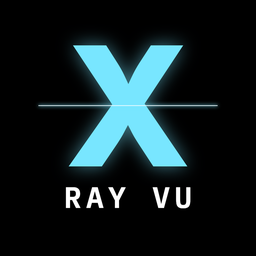

X-Ray Vu est une chaîne d'éducation en radiologie, en français. Nous montrons de vraies images médicales — radios, scanners, IRM et échographies sous licences libres — et expliquons simplement la différence entre un organe normal et un organe malade, avec des quiz chaque jour.
X-Ray Vu is a French educational radiology channel. We show real, openly licensed medical images (X-ray, CT, MRI, ultrasound) and explain normal versus disease, with daily quizzes.
YouTube : youtube.com/@xrayvu
Instagram : @x.rayvu
TikTok : @x.rayvu
X-Ray Vu Poster est notre outil interne qui publie nos propres vidéos éducatives sur notre propre compte TikTok, après connexion avec TikTok et validation de chaque publication par le créateur.
X-Ray Vu Poster is our internal desktop tool that publishes our own educational videos to our own TikTok account, after signing in with TikTok and creator confirmation of each post.
Éducation uniquement, pas un avis médical. Education only — not medical advice.